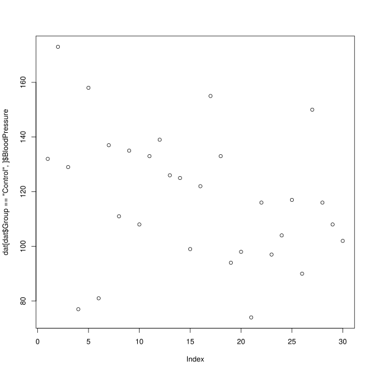
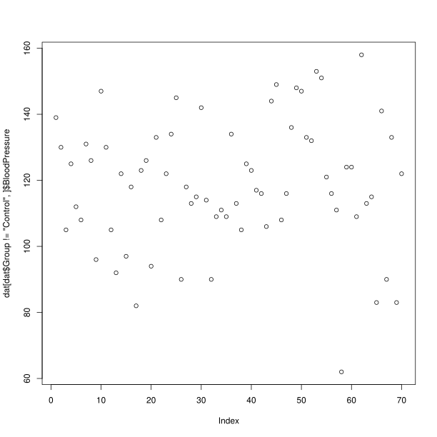

MERGE 04: Addressing Data
Overview
Teaching: 20 min
Exercises: 0 minQuestions
What are the different methods for accessing parts of a data frame?
Objectives
Understand the three different ways R can address data inside a data frame.
Combine different methods for addressing data with the assignment operator to update subsets of data.
R is a powerful language for data manipulation. There are three main ways for addressing data inside R objects.
- By index (subsetting)
- By logical vector
- By name (columns only)
Lets start by loading some sample data:
dat <- read.csv(file = 'data/sample.csv', header = TRUE, stringsAsFactors = FALSE)
Interpreting Rows as Headers
The first row of this csv file is a list of column names. We used the header = TRUE argument to
read.csvso that R can interpret the file correctly. We are using the stringsAsFactors = FALSE argument to override the default behaviour for R. Using factors in R is covered in a separate lesson.
Lets take a look at this data.
class(dat)
[1] "data.frame"
R has loaded the contents of the .csv file into a variable called dat which is a data frame.
We can compactly display the internal structure of a data frame using the structure function str.
str(dat)
'data.frame': 100 obs. of 9 variables:
$ ID : chr "Sub001" "Sub002" "Sub003" "Sub004" ...
$ Gender : chr "m" "m" "m" "f" ...
$ Group : chr "Control" "Treatment2" "Treatment2" "Treatment1" ...
$ BloodPressure: int 132 139 130 105 125 112 173 108 131 129 ...
$ Age : num 16 17.2 19.5 15.7 19.9 14.3 17.7 19.8 19.4 18.8 ...
$ Aneurisms_q1 : int 114 148 196 199 188 260 135 216 117 188 ...
$ Aneurisms_q2 : int 140 209 251 140 120 266 98 238 215 144 ...
$ Aneurisms_q3 : int 202 248 122 233 222 320 154 279 181 192 ...
$ Aneurisms_q4 : int 237 248 177 220 228 294 245 251 272 185 ...
The str function tell us that the data has 100 rows and 9 columns. It is also tell us that the data frame is made up of character chr, integer int and numeric vectors.
head(dat)
ID Gender Group BloodPressure Age Aneurisms_q1 Aneurisms_q2
1 Sub001 m Control 132 16.0 114 140
2 Sub002 m Treatment2 139 17.2 148 209
3 Sub003 m Treatment2 130 19.5 196 251
4 Sub004 f Treatment1 105 15.7 199 140
5 Sub005 m Treatment1 125 19.9 188 120
6 Sub006 M Treatment2 112 14.3 260 266
Aneurisms_q3 Aneurisms_q4
1 202 237
2 248 248
3 122 177
4 233 220
5 222 228
6 320 294
The data is the results of an (not real) experiment, looking at the number of aneurysms that formed in the eyes of patients who undertook 3 different treatments.
Addressing by Index
Data can be accessed by index. We have already seen how square brackets [ can be used to subset data (sometimes also called “slicing”). The generic format is dat[row_numbers,column_numbers].
Selecting Values
What will be returned by
dat[1, 1]? Think about the number of rows and columns you would expect as the result.Solution
dat[1, 1][1] "Sub001"
If we leave out a dimension R will interpret this as a request for all values in that dimension.
Selecting More Values
What will be returned by
dat[, 2]?Solution
dat[, 2][1] "m" "m" "m" "f" "m" "M" "f" "m" "m" "f" "m" "f" "f" "m" "m" "m" "f" "m" [19] "m" "F" "f" "m" "f" "f" "m" "M" "M" "f" "m" "f" "f" "m" "m" "m" "m" "f" [37] "f" "m" "M" "m" "f" "m" "m" "m" "f" "f" "M" "M" "m" "m" "m" "f" "f" "f" [55] "m" "f" "m" "m" "m" "f" "f" "f" "f" "M" "f" "m" "f" "f" "M" "m" "m" "m" [73] "F" "m" "m" "f" "M" "M" "M" "f" "m" "M" "M" "m" "m" "f" "f" "f" "m" "m" [91] "f" "m" "F" "f" "m" "m" "F" "m" "M" "M"
The colon : can be used to create a sequence of integers.
6:9
[1] 6 7 8 9
Creates a vector of numbers from 6 to 9.
This can be very useful for addressing data.
Subsetting with Sequences
Use the colon operator to index just the aneurism count data (columns 6 to 9).
Solution
dat[, 6:9]Aneurisms_q1 Aneurisms_q2 Aneurisms_q3 Aneurisms_q4 1 114 140 202 237 2 148 209 248 248 3 196 251 122 177 4 199 140 233 220 5 188 120 222 228 6 260 266 320 294 7 135 98 154 245 8 216 238 279 251 9 117 215 181 272 10 188 144 192 185 11 134 155 247 223 12 152 177 323 245 13 112 220 225 195 14 109 150 177 189 15 146 140 239 223 16 97 172 203 207 17 165 157 200 193 18 158 265 243 187 19 178 109 206 182 20 107 188 167 218 21 174 160 203 183 22 97 110 194 133 23 187 239 281 214 24 188 191 256 265 25 114 199 242 195 26 115 160 158 228 27 128 249 294 315 28 112 230 281 126 29 136 109 105 155 30 103 148 219 228 31 132 151 234 162 32 118 154 260 160 33 166 176 253 233 34 152 105 197 299 35 191 148 166 185 36 152 178 158 170 37 161 270 232 284 38 239 184 317 269 39 132 137 193 206 40 168 255 273 274 41 140 184 239 202 42 166 85 179 196 43 141 160 179 239 44 161 168 212 181 45 103 111 254 126 46 231 240 260 310 47 192 141 180 225 48 178 180 169 183 49 167 123 236 224 50 135 150 208 279 51 150 166 153 204 52 192 80 138 222 53 153 153 236 216 54 205 264 269 207 55 117 194 216 211 56 199 119 183 251 57 182 129 226 218 58 180 196 250 294 59 111 111 244 201 60 101 98 178 116 61 166 167 232 241 62 158 171 237 212 63 189 178 177 238 64 189 101 193 172 65 239 189 297 300 66 185 224 151 182 67 224 112 304 288 68 104 139 211 204 69 222 199 280 196 70 107 98 204 138 71 153 255 218 234 72 118 165 220 227 73 102 184 246 222 74 188 125 191 157 75 180 283 204 298 76 178 214 291 240 77 168 184 184 229 78 118 170 249 249 79 169 114 248 233 80 156 138 218 258 81 232 211 219 246 82 188 108 180 136 83 169 168 180 211 84 241 233 292 182 85 65 207 234 235 86 225 185 195 235 87 104 116 173 221 88 179 158 216 244 89 103 140 209 186 90 112 130 175 191 91 226 170 307 244 92 228 221 316 259 93 209 142 199 184 94 153 104 194 214 95 111 118 173 191 96 148 132 200 194 97 141 196 322 273 98 193 112 123 181 99 130 226 286 281 100 126 157 129 160
Finally we can use the c() (combine) function to address non-sequential rows and columns.
dat[c(1, 5, 7, 9), 1:5]
ID Gender Group BloodPressure Age
1 Sub001 m Control 132 16.0
5 Sub005 m Treatment1 125 19.9
7 Sub007 f Control 173 17.7
9 Sub009 m Treatment2 131 19.4
Returns the first 5 columns for patients in rows 1,5,7 and 9
Subsetting Non-Sequential Data
Write code to return the age and gender values for the first 5 patients.
Solution
dat[1:5, c(5, 2)]Age Gender 1 16.0 m 2 17.2 m 3 19.5 m 4 15.7 f 5 19.9 m
Addressing by Name
Columns in an R data frame are named.
colnames(dat)
[1] "ID" "Gender" "Group" "BloodPressure"
[5] "Age" "Aneurisms_q1" "Aneurisms_q2" "Aneurisms_q3"
[9] "Aneurisms_q4"
Default Names
If column names are not specified e.g. using
headers = FALSEin aread.csv()function, R assigns default namesV1, V2, ..., Vn
We usually use the $ operator to address a column by name
dat$Gender
[1] "m" "m" "m" "f" "m" "M" "f" "m" "m" "f" "m" "f" "f" "m" "m" "m" "f" "m"
[19] "m" "F" "f" "m" "f" "f" "m" "M" "M" "f" "m" "f" "f" "m" "m" "m" "m" "f"
[37] "f" "m" "M" "m" "f" "m" "m" "m" "f" "f" "M" "M" "m" "m" "m" "f" "f" "f"
[55] "m" "f" "m" "m" "m" "f" "f" "f" "f" "M" "f" "m" "f" "f" "M" "m" "m" "m"
[73] "F" "m" "m" "f" "M" "M" "M" "f" "m" "M" "M" "m" "m" "f" "f" "f" "m" "m"
[91] "f" "m" "F" "f" "m" "m" "F" "m" "M" "M"
When we extract a single column column from a data frame using the $ operator, R will return a vector of that column class and not a data frame.
class(dat$Gender)
[1] "character"
class(dat$BloodPressure)
[1] "integer"
Named addressing can also be used in square brackets.
head(dat[, c('Age', 'Gender')])
Age Gender
1 16.0 m
2 17.2 m
3 19.5 m
4 15.7 f
5 19.9 m
6 14.3 M
Best Practice
Best practice is to address columns by name. Often, you will create or delete columns and the column position will change.
Logical Indexing
A logical vector contains only the special values TRUE and FALSE.
c(TRUE, TRUE, FALSE, FALSE, TRUE)
[1] TRUE TRUE FALSE FALSE TRUE
Truth and Its Opposite
Note the values
TRUEandFALSEare all capital letters and are not quoted.
Logical vectors can be created using relational operators e.g. <, >, ==, !=, %in%.
x <- c(1, 2, 3, 11, 12, 13)
x < 10
[1] TRUE TRUE TRUE FALSE FALSE FALSE
x %in% 1:10
[1] TRUE TRUE TRUE FALSE FALSE FALSE
We can use logical vectors to select data from a data frame.
index <- dat$Group == 'Control'
dat[index,]$BloodPressure
[1] 132 173 129 77 158 81 137 111 135 108 133 139 126 125 99 122 155 133 94
[20] 98 74 116 97 104 117 90 150 116 108 102
Often this operation is written as one line of code:
plot(dat[dat$Group == 'Control', ]$BloodPressure)

Using Logical Indexes
- Create a scatterplot showing BloodPressure for subjects not in the control group.
- How many ways are there to index this set of subjects?
Solution
The code for such a plot:
plot(dat[dat$Group != 'Control', ]$BloodPressure)
In addition to
dat$Group != 'Control', one could usedat$Group %in% c("Treatment1", "Treatment2").
Combining Indexing and Assignment
The assignment operator <- can be combined with indexing.
x <- c(1, 2, 3, 11, 12, 13)
x[x < 10] <- 0
x
[1] 0 0 0 11 12 13
Updating a Subset of Values
In this dataset, values for Gender have been recorded as both uppercase
M, Fand lowercasem, f. Combine the indexing and assignment operations to convert all values to lowercase.Solution
dat[dat$Gender == 'M', ]$Gender <- 'm' dat[dat$Gender == 'F', ]$Gender <- 'f'
Key Points
Data in data frames can be addressed by index (subsetting), by logical vector, or by name (columns only).
Use the
$operator to address a column by name.